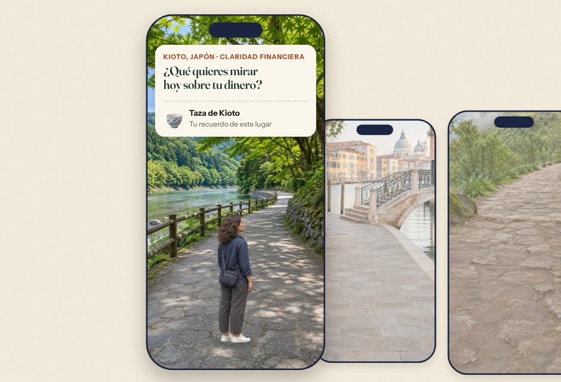
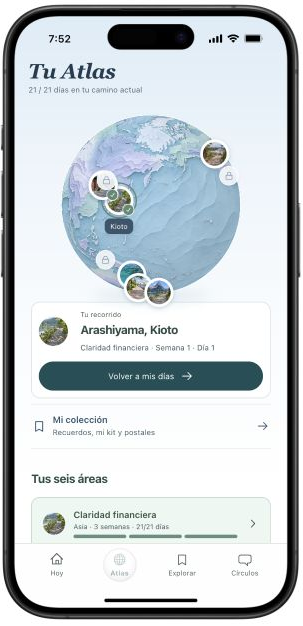
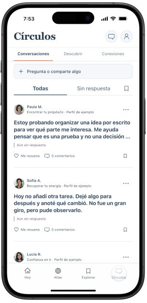

Mi colección

Taza de Kioto
Un recuerdo por cada parada que completas.
Prototipo · no es la página pública
Cada día llegas a un lugar nuevo, reflexionas sobre algo que estás viviendo y te llevas una herramienta para usar en tu vida.

La imagen resume la escena: llegas a un lugar, respondes una pregunta y te llevas un recuerdo.
Prueba una pregunta
Así es una práctica en Elara: algo que podrías estar viviendo, una pregunta y dos maneras de responder. Elige la que más se parece a ti.
 Práctica de ejemplo · Claridad financiera
Práctica de ejemplo · Claridad financiera
Alguien de tu familia te pide dinero. Quieres ayudar, pero todavía no sabes cuánto puedes aportar.
Lo que te daTiempo para mirar tus números con calma. Y la otra persona sabe cuándo va a tener tu respuesta.
Una frase para usar«Déjame revisar cuánto puedo aportar y te digo mañana.»
Lo que te daCercanía. La otra persona sabe desde ya que cuenta contigo, y el cuánto lo puedes definir después.
Una frase para usar«Cuenta conmigo. Hoy reviso mis números y mañana te confirmo cuánto.»
Toca una respuesta para ver qué te da.
Ejemplo guiado. Tu respuesta no se envía ni se guarda.
Lo que te llevas
De la práctica de arriba, en Kioto, te quedarías con esto:
Mi colección
Un recuerdo por cada parada que completas.
Mi kit personal
«Déjame revisar cuánto puedo aportar y te digo mañana.»
Las frases y herramientas que quieres volver a usar.
Atlas

Ejemplo. La taza y la frase salen de la práctica de muestra.
Seis áreas de tu vida
Claridad financiera. Observa una decisión sobre tu dinero y prepara una regla que tenga sentido para ti.
Encontrar tu propósito. Reúne pistas sobre lo que te importa y diseña una prueba pequeña antes de decidir.
Confianza en ti. Reconoce lo que sí sabes y practica revisar una decisión con razones.
Recuperar tu energía. Observa qué te da energía, qué te cuesta y prueba un ajuste posible.
Amor y límites. Distingue lo que puedes ofrecer y prepara una petición o un límite concreto.
Ritmo diario. Prueba una señal y un siguiente paso para retomar una rutina cuando cambia tu día.
También en la app

Audios, videos, guías y talleres para profundizar a tu ritmo.
Contenido de muestra

Comparte una pregunta o empieza por leer. Tú eliges cuándo participar.
Perfiles y conversaciones de muestra
Elara está en versión de prueba, en español e inglés.